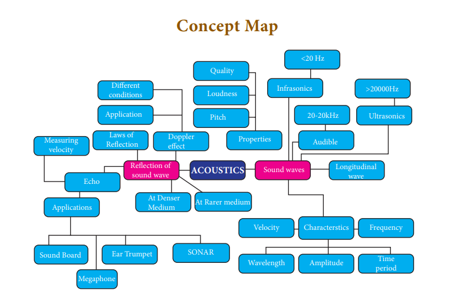
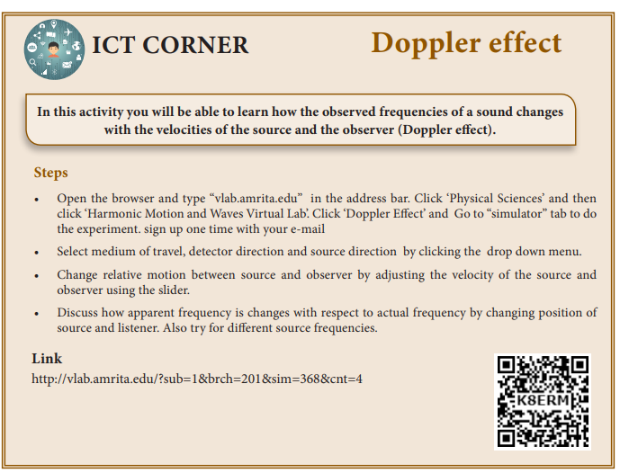

I- choose the correct answer
1. When a sound wave travels through air, the air particles
a) vibrate along the direction of the wave motion
b) vibrate but not in any fixed direction
c) vibrate perpendicular to the direction of the wave motion
d) do not vibrate
2. Velocity of sound in a gaseous medium is 330 meter second power minus 1. If the pressure is increased by 4 times without causing a change in the temperature, the velocity of sound in the gas is
a) 330 meter second power minus 1
b) 660 meter second power 1
c) 156 meter second power minus 1
d) 990 meter second power minus 1
3. The frequency, which is audible to the human ear is
a) 50 kHz b) 20 kHz c) 15000 kHz d) 10000 kHz
4. The velocity of sound in air at a particular temperature is 330 meter second power minus 1. What will be its value when temperature is doubled, and the pressure is halved?
a) 330 meter second power minus 1
b) 165 meter second power minus 1
c) 330 × √2 meter second power minus 1
d) 320 by √ 2 meter second power minus 1
5. If a sound wave travels with a frequency of
1.25 × 10 power 4 Hz at 344 meter second power minus 1, the wavelength will be
a) 27.52 meter
b) 275.2 meter
c) 0.02752 meter
d) 2.752 meter
6. The sound waves are reflected from an obstacle into the same medium from which they were incident. Which of the following changes?
a) speed
b) frequency
c) wavelength
d) none of these
7.Velocity of sound in the atmosphere of a planet is 500 meter second power minus 1. The minimum distance between the sources of sound and the obstacle to hear the echo, should be
a) 17 meter
b) 20 meter
c) 25 meter
d) 50 meter
II. Fill up the blanks
1. Rapid back and forth motion of a particle about its mean position is called dash.
2. If the energy in a longitudinal wave travel from south to north, the particles of the medium would be vibrating in dash.
3. A whistle giving out a sound of frequency 450 Hz, approaches a stationary observer at a speed of 33 meter second power minus 1. The frequency heard by the observer is (speed of sound = 330 meter second power minus 1) dash.
4. A source of sound is travelling with a velocity 40 km per h towards an observer and emits a sound of frequency 2000 Hz. If the velocity of sound is 1220 km per h, then the apparent frequency heard by the observer is dash.
III. True or false: - (If false give the reason)
1. Sound can travel through solids, gases, liquids and even vacuum.
2. Waves created by earthquake are Infrasonic.
3. The velocity of sound is independent of temperature.
4. The Velocity of sound is high in gases than liquids.
IV. Match the following
1. Infrasonic - (a) Compressions
2. Echo - (b) 22 kHz
3. Ultrasonic - (c) 10 Hz
4. High pressure region - (d) Ultrasonography
V. Assertion and Reason Questions
Mark the correct choice as
a. If both the assertion and the reason are true and the reason is the correct explanation of the assertion.
b. If both the assertion and the reason are true but the reason is not the correct explanation of the assertion.
c. Assertion is true, but the reason is false.
d. Assertion is false, but the reason is true.
1) Assertion: The change in air pressure affects the speed of sound.
Reason: The speed of sound in a gas is proportional to the square of the pressure
2) Assertion: Sound travels faster in solids than in gases.
Reason: Solid possess a greater density than that of gases.
VI. Answer very briefly
1. What is a longitudinal wave?
2. What is the audible range of frequency?
3. What is the minimum distance needed for an echo?
4. What will be the frequency sound having 0.20 m as its wavelength, when it travels with a speed of 331 m s power –1?
5. Name three animals, which can hear ultrasonic vibrations.
VII. Answer briefly
1. Why does sound travel faster on a rainy day than on a dry day?
2. Why does an empty vessel produce more sound than a filled one?
3. Air temperature in the Rajasthan desert can reach 46°C. What is the velocity of sound in air at that temperature? (V0 = 331 meter second power minus 1)
4. Explain why, the ceilings of concert halls are curved.
5. Mention two cases in which there is no Doppler effect in sound?
VIII. Problem Corner
1. A sound wave has a frequency of 200 Hz and a speed of 400 meter second power minus 1 in a medium. Find the wavelength of the sound wave.
2. The thunder of cloud is heard 9.8 seconds later than the flash of lightning. If the speed of sound in air is 330 meter second power minus 1, what will be the height of the cloud?
3. A person who is sitting at a distance of 400 m from a source of sound is listening to a sound of
600 Hz. Find the time period between successive compressions from the source?
4. An ultrasonic wave is sent from a ship towards the bottom of the sea. It is found that the time interval between the transmission and reception of the wave is 1.6 seconds. What is the depth of the sea, if the velocity of sound in the seawater is 1400 meter second power minus 1?
5. A man is standing between two vertical walls 680 m apart. He claps his hands and hears two distinct echoes after 0.9 seconds and 1.1 second respectively. What is the speed of sound in the air?
6. Two observers are stationed in two boats 4.5 km apart. A sound signal sent by one, under water, reaches the other after 3 seconds. What is the speed of sound in the water?
7. A strong sound signal is sent from a ship towards the bottom of the sea. It is received back after 1sWhat is the depth of sea given that the speed of sound in water 1450 meter second power minus 1?
IX. Answer in Detail
1. What are the factors that affect the speed of sound in gases?
2. What is mean by reflection of sound? Explain:
a) reflection at the boundary of a rarer medium
b) reflection at the boundary of a denser medium
c) Reflection at curved surfaces
3. a) What do you understand by the term ‘ultrasonic vibration’?
b) State three uses of ultrasonic vibrations.
c) Name three animals which can hear ultrasonic vibrations.
4. What is an echo?
a) State two conditions necessary for hearing an echo.
b) What are the medical applications of echo?
c) How can you calculate the speed of sound using echo?
X. HOT Questions
1. Suppose that a sound wave and a light wave have the same frequency, then which one has a longer wavelength?
a) Sound b) Light c) both a and b d) data not sufficient
2. When sound is reflected from a distant object, an echo is produced. Let the distance between the reflecting surface and the source of sound remain the same. Do you hear an echo sound on a hotter day? Justify your answer.
REFERENCE BOOKS 1. Fundamental Physics by K.L. Gomber and K.L. Gogia
2. Fundamentals of sound and vibration by Franky Fahy and David Thomson
3. The theory of sound by Rayleigh and John William Strutt
INTERNET RESOURCE 1. http://people.bath.ac.uk/ensmjc/Notes/ acoustics.pdf

